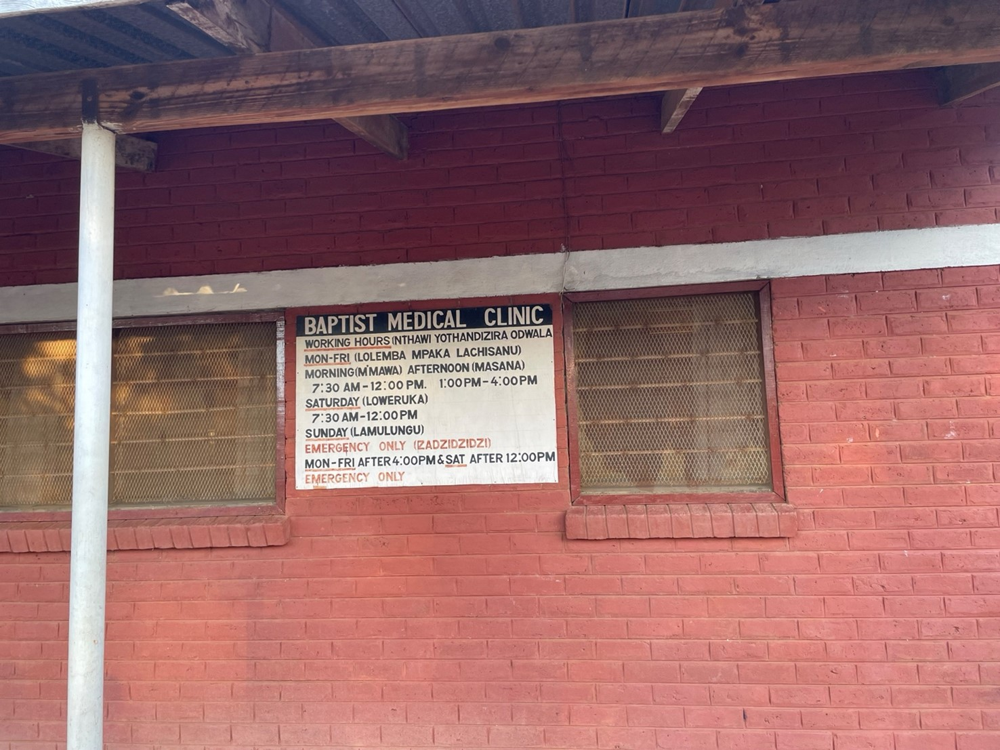

The potential impact of declining development assistance for healthcare on population health: projections for Malawi
Margherita Molaro et al. (medRxiv pre-print)
{kind=link}
Development assistance for health (DAH) to Malawi as a fraction of its gross domestic product (GDP) will likely decrease in the next few decades. Given the country’s significant reliance on DAH for the delivery of its healthcare services, estimating the impact that this could have on health projections for the country is crucial. We use the Thanzi La Onse (TLO) model to simulate the health burden that would be incurred under different scenarios of health expenditure in Malawi between 2019 and 2040 (inclusive). Because the ability of the healthcare system to meet the demand for care in the model is constrained by the human resources for health (HRH) available, this allows us to estimate the return in health from each expenditure scenario.
We found that between 2019 and 2040, the total health burden, measured in disability-adjusted life years (DALYs), is reduced by about 10 million DALYs for each 1% increase in annual healthcare spending. However, the benefits of increasing healthcare spending diminish once spending grows beyond an additional 4% of GDP. The reasons for these diminishing returns are due to the healthcare system reaching a point where it has already addressed the most urgent needs with the available cost-effective treatments and persistent constraints that not immediately resolved by more funding, such as limited access to healthcare for some population groups, imperfect diagnoses, and the natural limitations of each treatment. All these factors are explicitly captured in the TLO model. If the forecasts by the Institute for Health Metrics and Evaluation (IHME) about a reduction in the percentage of GDP spent on healthcare are accurate, the country could experience an increase in total health burdens of 7% to 16%, compared to that predicted for current levels of spending. A lot of this increased in ill health would come from reversals in the gains made previously by Malawi in important areas of health such as reproductive, maternal, newborn, and child health, malaria, and tuberculosis. This analysis offers the first-ever quantification of the potential long-term impacts of various health expenditure scenarios in Malawi. It demonstrates the potential risk of reversing gains in several key areas of health in Malawi if current projections of declining development assistance for health materialise and highlights the need for both domestic and international stakeholders to take proactive measures in response to this anticipated trend.
Life expectancy (averaged over two-year periods) achieved under different expenditure scenario.